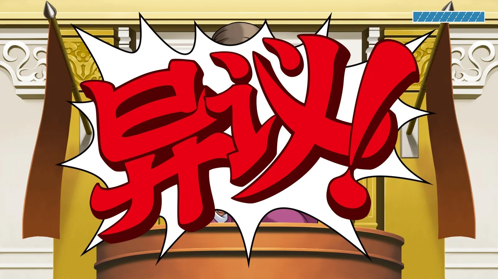
| 开发商 | Capcom（卡普空） |
|---|---|
| 发行商 | Capcom（卡普空） |
| 发售日期 | 2019年2月21日（Switch／PS4／Xbox One 同步）/ PC 版 2019年4月10日 / 3DS 原版 2014年4月17日 |
| 平台 | Nintendo Switch（本机版本）/ PS4·Xbox One·PC（Steam）/ iOS·Android |
| 游玩时长 | 共 14 话，官方未公布统一时长，按章节体量推算全通约 20 小时上下 |
| 游戏人数 | 单人 |
| 语言 | 共 9 种（含日·英·简繁中文·韩·德·法等；简繁中文 2019年8月22日更新追加，配中文语音） |
| 分级 | 12 岁以上（CERO B／ESRB Teen／PEGI 12） |
| 下载容量 | 约 2.2–2.8 GB（任天堂各区商店页标注不一） |
| 全球销量 | 突破 500 万套（卡普空 2026-09-20 公布；系列整体同期突破 1500 万套） |
| 系列 25 周年 | 2026 年 10 月 12 日（初代 2001-10-11 发售） |
《逆转裁判123：成步堂精选集》（Phoenix Wright: Ace Attorney Trilogy）是卡普空把系列前三代打包的高清合集，Switch 版 2019 年 2 月 21 日与 PS4、Xbox One 同步发售，PC（Steam）版 4 月 10 日跟进。收录《逆转裁判：复苏的逆转》《逆转裁判2》《逆转裁判3》共 14 话，正是成步堂龙一当主角的原点三部曲。
玩法是典型的法庭推理冒险：庭外调查找证物、庭上质询证人，靠指出证词里的矛盾把案子翻过来。Switch 版完整支持掌机／桌面／电视三种模式，也支持触屏操作，通勤路上能一口气推完一整案。
这一代也是系列第一次官方中文化的作品——2019 年 8 月 22 日的更新给家用机与 Steam 版追加了简繁中文文本及中文语音，系列那三句标志性台词也被官方译了过来：「異議あり！」→「異議！」、「待った！」→「等等！」、「くらえ！」→「看招！」。官方宣传口径是支持 9 种语言。
销量这件事本身就挺传奇：3DS 原版 2014 年 4 月 17 日在海外只做数字发行、卖得不算好（日本全年 46,819 份、Famitsu 排行第 139 位），七年后靠家用机与移动端翻了个身——卡普空 2026 年 9 月 20 日公布本作全球累计销量突破 500 万套，同期《逆转裁判》系列整体突破 1500 万套。2026 年 10 月 12 日正好是系列 25 周年，官方已放出周年纪念视觉图，池袋与梅田的 Capcom Cafe 从 10 月 9 日起做联动。
这是对 2014 年 3DS 版《逆转裁判123 成步堂精选集》的家用机移植：场景全部高清重绘、界面重做，也是系列第一次在非任天堂主机上发售。
往后看，成步堂篇到 3 代为止：《逆转裁判4》换王泥喜法介担纲，5、6 代由成步堂、王泥喜与希月心音共同主角的篇章承接；另有《逆转检事》外传与《大逆转裁判》两部支线可补。
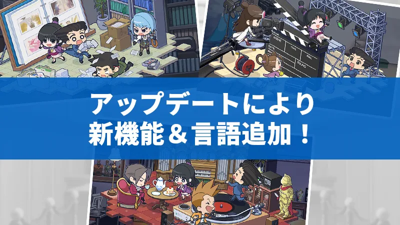
更新内容与截图取自卡普空《逆转裁判123》官方站点（2025-11-19 公告）。
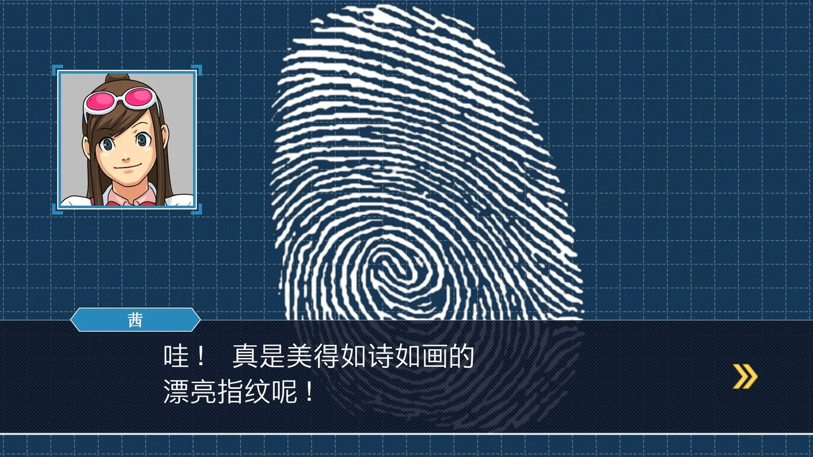
成步堂第一次站上法庭，被告是小学同学矢张政志。对着「检察官亚内武文」念出「異議！」的那一下，就是全系列的开场白。
绫里千寻在事务所遇害，妹妹真宵成了嫌疑人。第一次出现「辩护中途换人」、也第一次正面对上御剑怜侍。
儿童剧演员被杀，庭上五六个证人轮流作证，是全系列少见的「集体作证」场面；真宵也第一次站上法庭的证人席。
平安夜，御剑怜侍成了被告。狩魔豪登场，十五年前的一桩旧案被翻出来，父子两人在法庭上彻底对上。
系列最长的一话：3 段调查 + 7 场庭审。糸锯圭介被诬告入狱、警队与律师的立场第一次摆到台面上。英文名是系列正篇里唯一不含 Turnabout 的一话。
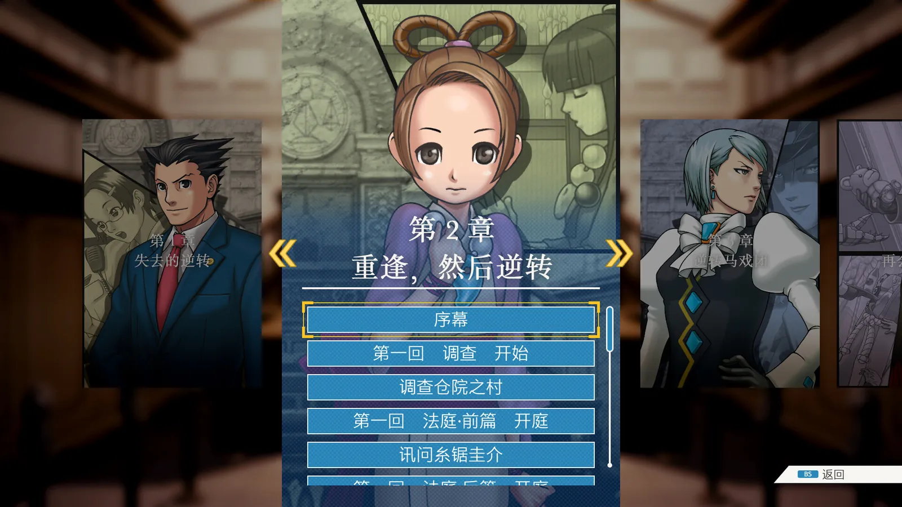
开局成步堂被人从背后敲晕、失去记忆，委托人是个女警。失忆状态下的「我不是律师」桥段是全作最有意思的开局之一。
真宵被控杀害医师，春美登场；狩魔冥压轴出场——13 岁就当上检察官，法庭上带着鞭子。机械降神级阵容登场，案子本身也不弱。
马戏团后台命案，空中飞人马克斯被告。雪地脚印、悬空木箱这类物证演示是前三作里最漂亮的一课。
成步堂第一次为明知有罪的被告辩护，全程被当成共犯耍，结尾那份「礼物」直接改变了整个系列的走向。全系列最压抑的一话。
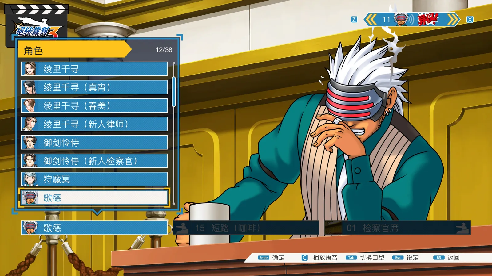
时间倒回五年前：绫里千寻的第一次出庭，成步堂那时还是嫌疑人身份。全系列情感浓度最高的一话，父女、师徒两条线一起收。
秘宝「仓院之罐」失窃，自称怪盗的青年上门自首。戈德戴着眼罩登场，标志性地端着咖啡登场，「喝完第十七杯前必胜」的flag就此立下。
真子又一次站上被告席，这次庭上还混着一份「假成步堂」的辩护词；要先证明有人在冒充自己。
再往回倒一年：成步堂和绫里千寻的初遇，「黑色星期一」那场学生法庭。它解释了两人为什么会成为师徒。
成步堂篇的终章。御剑怜侍中枪生死一线，庭上那段「最后证言」是全系列公认的名场面，也是三作收尾的分量所在。
中文案件名按官方中文版译名整理，英文名为各作原名。案件本身的谜底这里一律不写——自己打出来的反转才是这游戏的味道。
搜查阶段只有四个动作——调查（挪光标看场景）、移动（换地点）、对话（问人，话题问过就打勾）、出示（亮证据或人物档案）。顺序完全自由，卡住了就回去把没问过的话题问一遍。
从第二作起，不肯开口的话题会挂上锁。给绫里春美的勾玉就能破——按正确顺序出示证据或人物档案，锁一根根开。这里不会直接判输，但出示错了照样扣分；破完一根回一半血。
证人作证是一段一段的。发现哪句不对劲就追及（逼他多说一句，常常会加出新证言）；确认有矛盾就出示对应的证据，点出「異議！」。绝大多数卡关都卡在「该追哪一句」。
右上角的条不是律师的血条，是法官的耐心。出示错证据、在不该追的时候追，都会掉一格；清零就当场判定被告有罪，本话重来。庭上每场只给几次失误余量。
系列世界的日本采「序审」，被告收押后三天内必须审结，所以节奏天然是「上午开庭、下午调查、晚上继续」。多数案子判一次无罪只能拖到次日庭，这也是每话像个小单元的原因。
看人脸色、靠肢体小动作抓谎话的「看穿」是第四作王泥喜的手环专属，这前三作没有。所以想玩纯粹的读证词版本，这合集反而是最干净的一份。
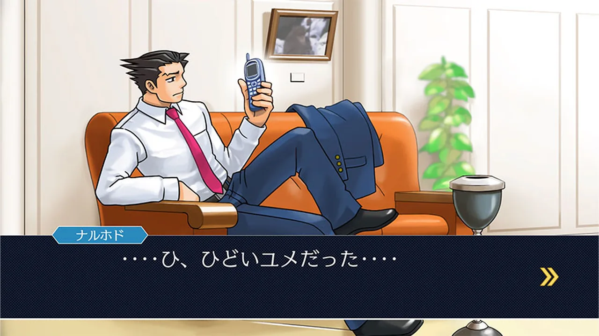
刺猬头的新人律师，靠虚张声势战斗，也靠虚张声势翻盘。日版由巧舟配音，1 至 4 代都是他。
名句是「律师无论在怎样的困境，都要在别人面前展露微笑」。第二话遇害，之后由妹妹与春美接棒她的位置。
千寻的妹妹，能请出姐姐的亡灵，关键时刻的「大证据」来源，也是全系列被绑架次数最多的角色。
千寻与真宵的表妹，灵力比真宵更强——心灵枷锁就是靠她的勾玉破的，作用相当于队伍的钥匙。
20 岁就当上检察官的天才，脾气和手段都硬，也是成步堂在法庭上最像「对手」的人。童年好友才是他最难啃的骨头。
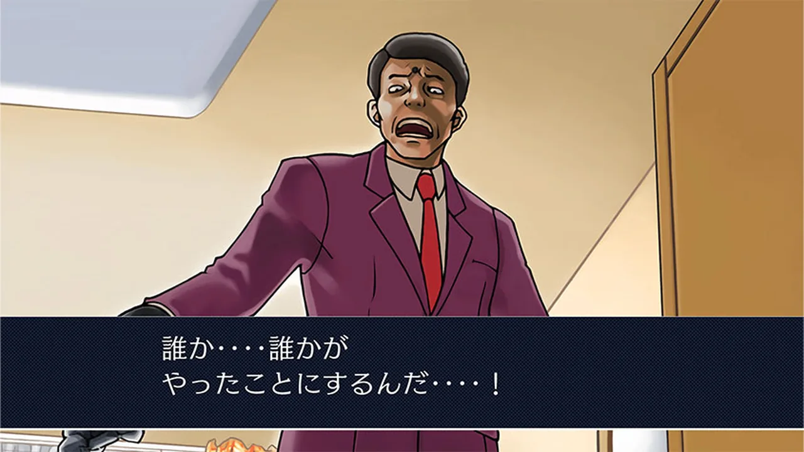
负责杀人案前期调查的老刑警，记性不好、推理更不行，但每次都冲在最前面，家常菜做饭水平一流。
「背后一定有矢张」的那个人物模板，第一话就被当成被告。他后来跑去学画，是系列里少见的「有自己人生」的角色。
13 岁就在美国当检察官，法庭上挥鞭子说话，对「完美」有病态执着；第二、四话分别把成步堂打到自闭再打回来。
四十年未尝败诉，御剑怜侍的师父，狩魔冥的父亲。系列里最有压迫感的对手，第一话就压轴登场。
护目镜遮脸、咖啡不离手，开口全是没人听得懂的比喻，自称「喝完第十七杯前必胜」。前五话他的真实身份是最大悬念。
外号「新人杀手」，专挑刚出道的新人律师下手，前三作里反复登场的老对手。
人物年龄、身份与配音按官方设定整理；本作中文版为后加语音，中文与日文声线不同属正常。立绘全部取自卡普空官网按角色名公布的官方素材（千寻 chihiro、怜侍 mitsurugi、政志 yahari、春美 harumi、冥 mei、戈德 godo）；成步堂与糸锯官网没有单独立绘，改用官方实机画面（日文版界面）。真宵、狩魔豪、亚内武文三位官网未公开单人素材，暂用印章字表示，不硬凑图。
时间线与销量均以卡普空官方「百万套系列」专区、官方 20 周年／25 周年年表为准；3DS 版日本销量引自 Famitsu 统计转述。
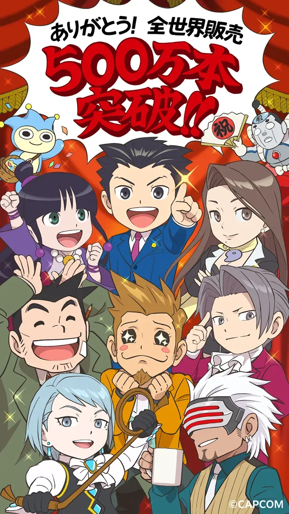
能。2019 年 8 月 22 日的官方更新已经给家用机与 Steam 版追加了简繁中文文本和中文语音，这是系列第一次官方中文化。买之前确认一下存档与语言设置就行。
Switch 版最完整：掌机／桌面／电视三种模式加触屏操作，通勤能玩。PC（Steam）版有 30 个成就可刷。移动版适合零碎时间。三作内容一致，主要差在操作方式与成就。
建议按 1→2→3 顺序。3-1 和 3-4 是往回倒叙的回忆篇（成步堂与绫里千寻的初遇），先打会削弱情绪；反过来最后打又容易忘记前面的人物关系。三作之间还互相埋了伏笔。
14 话，单话 1 到 2 小时，全通大约 20 小时上下（官方未公布统一时长，这是按章节体量估的）。卡关是常态——法庭玩法本来就靠反复读证词。
如果只想体验法庭推理的原型，买这一份就够，它是系列最纯粹的一批剧本。但 3DS 高清重绘是 2014 年的底子，画面放今天看仍有年代感；追求画面可以再考虑后续作。
官方分级是 12 岁以上。游戏没有操作门槛，全靠读文本和判断，中学年龄的孩子完全能玩。家长陪着读线索、当「第二个玩家」效果最好。
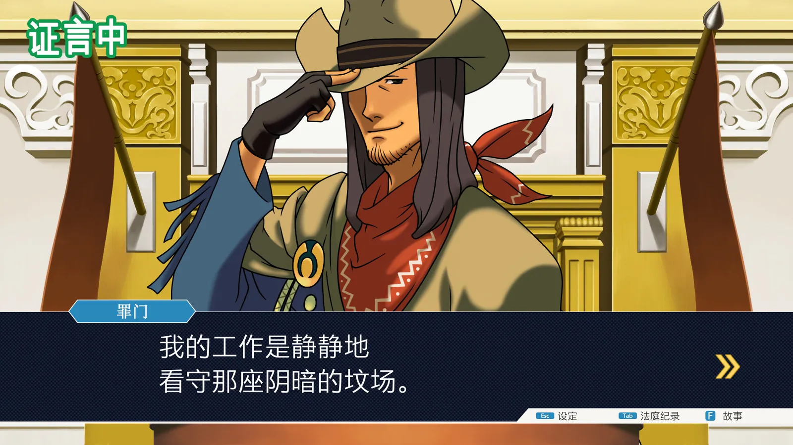
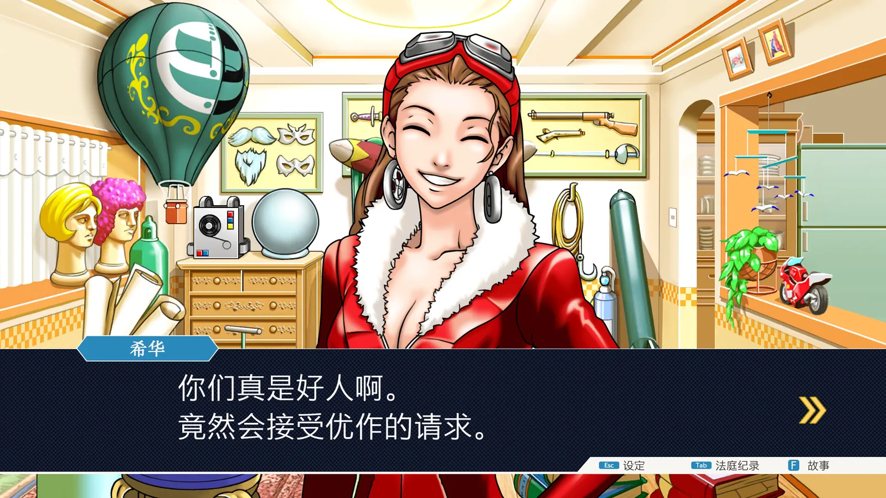
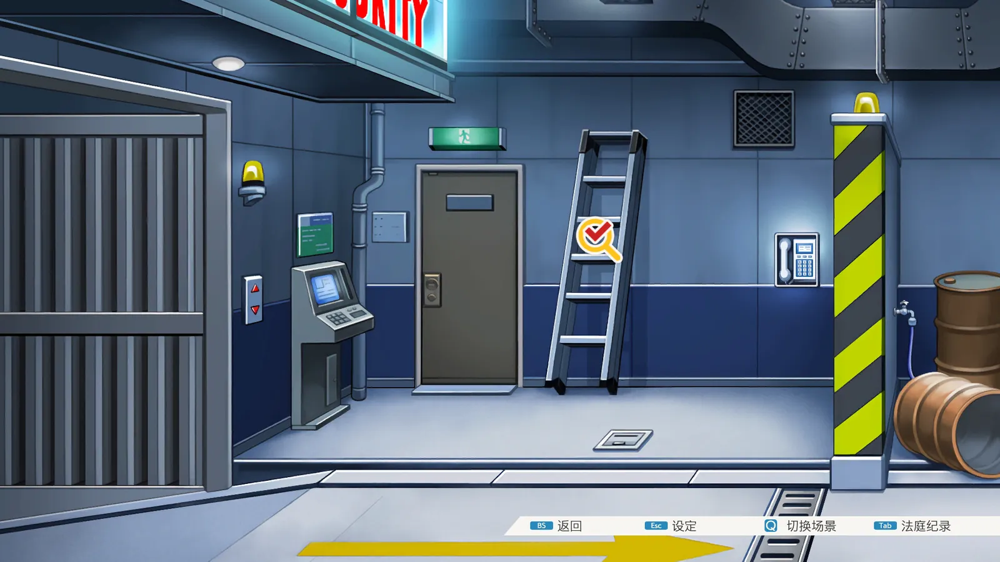
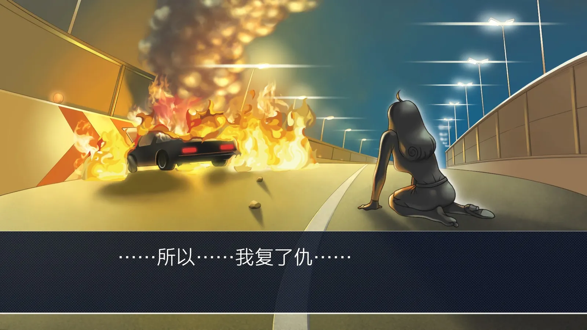
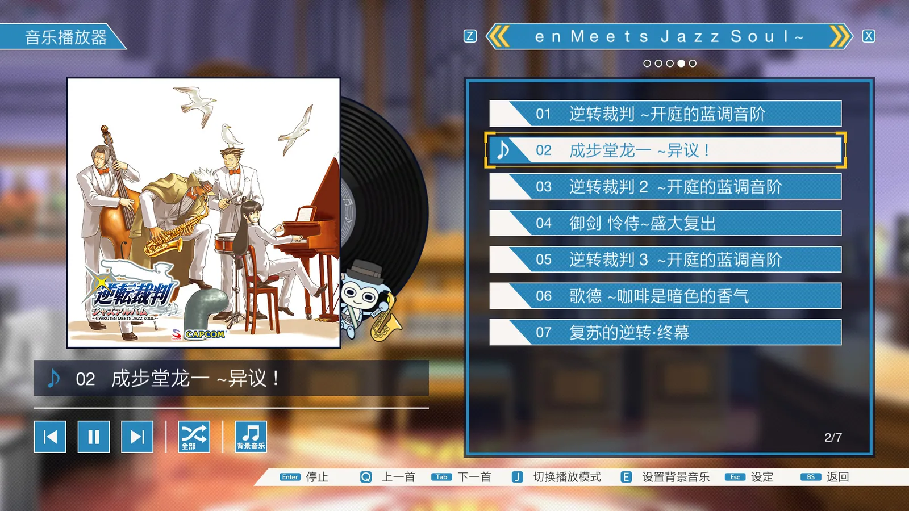
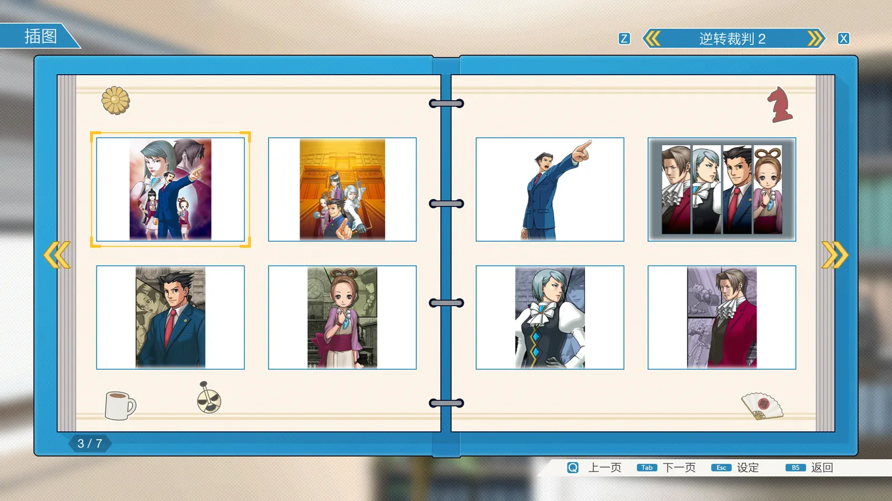
以上实机画面与角色立绘均取自官方公开素材：商店页截图来自 Steam 官方商店（卡普空发行页），角色立绘与主视觉来自卡普空《逆转裁判123》官方站点，版权均属 CAPCOM。本站仅作游戏介绍与评论用途，不作商业用途。想看你和儿子自己那台的中文界面画面，按 Switch 的截图键即可（相册里会自动存档），把图发我，我帮你挂上来。
逆转裁判是那种「明知道流程就那样，还是一章接一章停不下来」的游戏。真正抓人的是剧本——每章翻案那一刻的劲头，比不少大制作的花活都足，「异议！」喊出口的满足感是设计出来的，不是特效堆出来的。
我这台走的是中文版，从 2019 年那次更新算起，翻译在引进的日式推理游戏里属于第一梯队，不用隔着一层去看翻译腔。
缺点也说清楚：庭上庭下两件事翻来覆去就那几招，玩到第三作基本是凭剧情撑着；画面就更别提，高清重绘救不了 2014 年的底子。但论「单位时间里讲了多少故事」，它在同价位里很少输。
适合人群：愿意安安静静读完一段好剧本、喜欢从证词裂缝里揪真凶的玩家；对动作手感或开放世界有期待的，这台会让你失望。